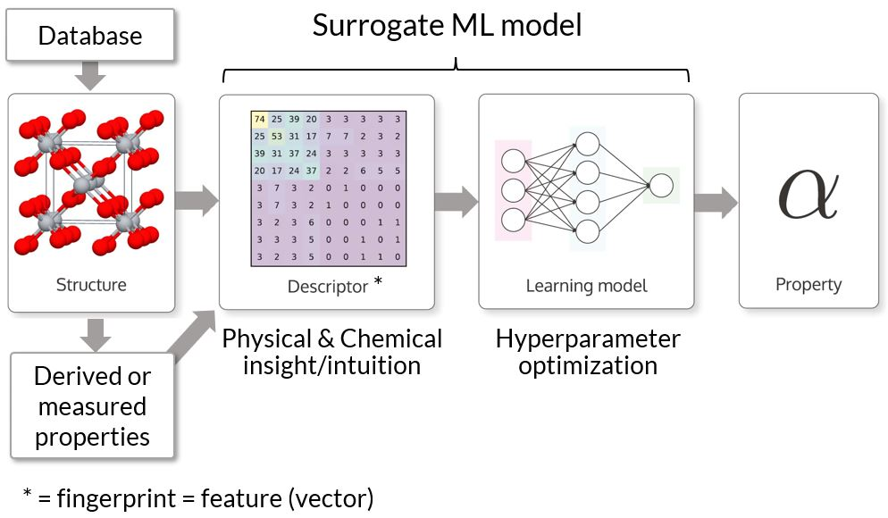
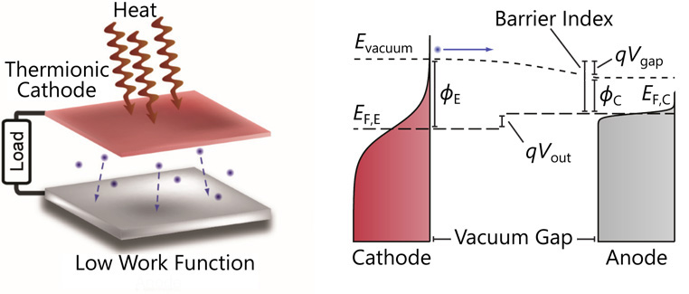
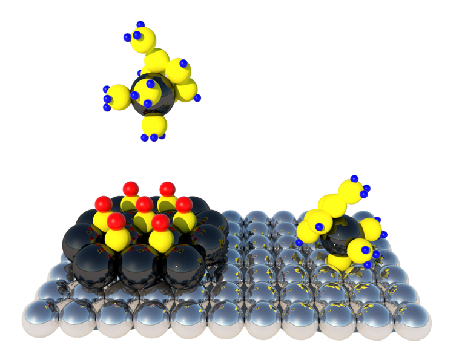
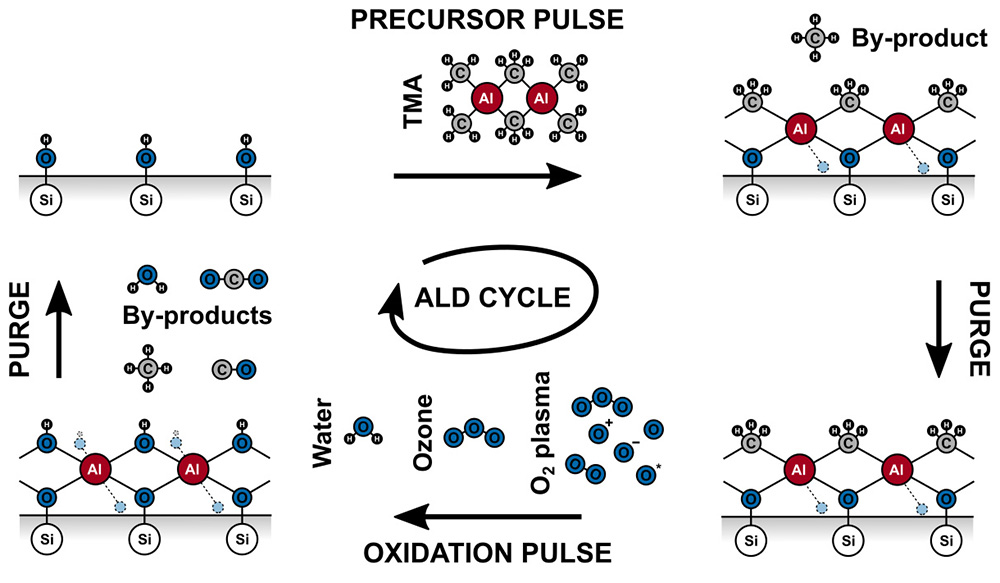

Research Directions
Materials Informatics and Data-Driven Materials Discovery

Data-driven materials science, often titled the “4th paradigm”, has opened an avenue towards material discovery through statistically driven machine learning approaches. Due to the continued increase in computing power and improvements of theoretical methods, the accuracy of predicted material properties has reached a reliability comparable to experiments while greatly surpassing them in terms of speed and cost. This gave rise to a rapid increase in available open-source material databases facilitating material discovery at an unprecedented scale. Many renewable energy challenges are limited by the discovery of a material with tuned, exceptional properties. The 4th paradigm of science provides a critical toolset to tackle these new material challenges.
The distinction between the classical Edisonian approach and the newly accessible in-silico approach is described here: For the former approach, potential material candidates are tested one-by-one, based on chemical intuition or similarity to previously successful material candidates. As experimental confirmation and/or high-fidelity, ab-inito simulations of individual candidates is time- and cost-intensive, this approach restricts progress to longer time scales. For the later approach, however, previous knowledge is systematically used to generate a statistically driven model to predict properties of new material candidates through a structure-property-relationship (see illustration on the left). The machine learning model facilitates the down-selection of promising material candidates at a fraction of the time and cost of conventional experimental or computational techniques.
In our group we use materials informatics tools and data-driven approaches to discover new materials for renewable energy applications and materials with unique electronic properties. We have strong expertise in surface properties that guides us to discover new material surfaces for heterogeneous catalysis, energy conversion, and battery interfaces.
Renewable Energy Materials

Renewable energy solutions are crucial to combat the challenges that come with climate change – a cause we feel passionate about. Converting heat to electricity is a promising avenue towards reducing the waste of energy and the subsequent reduction of carbon dioxide emissions – a prime goal of environmental groups and Green activists in recent decades. Thermionic energy conversion (TEC) is a process in which heat gets converted into electricity by thermionic emission of electrons from a heated electrode (cathode) that are collected at a cooler electrode (anode). The resulting potential difference creates a usable electric output current. We have been focusing in discovering new materials and approaches to enable thermionic conversion with high efficiency. An illustration of a thermionic converter and its band diagram is shown on the left. The conversion efficiency strongly increases with increasing cathode temperature and decreasing barrier index.
To make this process efficient even at lower temperatures, a material is required that easily emits electrons from its surface. The property that determines how much energy is required to extract an electron is called the work function. Lower work functions facilitate the emission of electrons at lower temperatures. Reducing the work function reduces the barrier index (see above Figure) and hence, strongly increases the efficiency curve.
We have developed a new approach to achieve a record-low work function (0.7 eV) for the anode of a TEC. This was ~0.3 eV lower than the lowest experimentally verified work function to date. The anode is comprised of a semiconductor (Gallium Arsenide) with an alkaline monolayer coating which creates surface dipoles that reduce the work function. Further reduction of the work function is achieved by shining a laser onto the semiconductor that induces an additional shift in the energy structure of the material. We applied this new concept to the anode of an experimental converter to demonstrate its feasibility for future high-efficiency energy conversion applications.
Material Surfaces with Tuned Properties

Solid-state surface properties are of utmost importance for many applications including catalysis, chemical synthesis, crystal growth, energy conversion, and electrochemistry. Most of our research projects rely on tuning surface properties and involve a thorough study of the surface chemistry and electronic properties at the surface. Surface termination and functional surface groups are key enablers for the growth of high quality growth of thin films. Another key surface property for the efficient conversion of heat into electricity is the work function. This electronic property determines how much energy is required to extract and electron from the surface of a materials.
Tuning surface properties play a key role in a few other projects that we and our collaborators worked on. Understanding of the precursor – substrate surface interaction is crucial when it comes to studying the nucleation phase of film growth during atomic layer deposition (ALD). Nucleation is strongly controlled by the surface termination and interfacial interaction between the precursor and the substrate. This limits the minimum thickness for films requiring complete coverage for many ALD chemistries. In Nature Catalysis (see illustration on the left) we report a new technique that uses carbon monoxide as a passivation gas during ALD to modify the surface energy of already deposited Pt nanoparticles to assist direct deposition onto a carbon catalyst support. This new approach to synthesizing nanoparticulate Pt/C catalysts achieved high Pt mass activities for the oxygen reduction reaction. The growth of Pt using conventional ALD and passivation-gas-incorporated ALD is illustrated below on the left and right, respectively.
In another project, we have developed an ab-initio photoemission model that accurately describes the photoemission process for the most diverse range of photocathode materials to date. Our model directly includes the full electronic structure of the material, photoexcitation probabilities for all direct optical transitions, and an improved surface-vacuum barrier transmission probability. For materials with a short skin-depth (typically metals) it is important to include electronic surface states in the photoemission model to accurately predict the emittance.
Thin-film Synthesis at the Atomic Scale

Key pieces of modern day electronic device technology keep following the trend of down-scaling. Thin film deposition has become of great importance in the semiconductor industry as critical device dimensions have reached the nanometer scale. As down-scaling continues rapidly, device features approach fundamental physical limits. During Prof. Peter’s doctoral research (at the University of Vienna and Stanford University) his work’s focus was on the characterization of thin films for new high-efficiency applications in solar cells and next-generation dielectrics. The experimental work was particularly focused on atomic layer deposition (ALD), which is a key enabling technique to synthesize high-quality thin films with precise thickness control down to the Angstrom level while staying at low processing temperatures. Unlike in conventional chemical vapor deposition techniques (where there is a continuous flow of precursor gas) in ALD the precursors are introduced sequentially until saturation of the precursor reaction with the surface has occurred and the by-products and remaining precursors are purged out. The key feature that enables this high-quality, conformal growth is the self-limiting nature of the individual half-steps, as illustrated below for the growth of aluminum oxide with the tri-methyl-aluminum (TMA) precursor. Due to the cycle-based nature of this deposition technique thin films can be grown with thickness control down to the atomic level.
During plasma-enhanced ALD (PEALD) a more reactive plasma is used as an oxidant which facilitates lower processing temperatures and higher film quality. However, PEALD typically exhibits less conformal growth of films deposited on complex 3-dimensional substrates with high aspect ratios. We have established processes to deposit thin dielectric films with a record-breaking high dielectric constant and high conformality on complex, high aspect-ratio substrates using PEALD. These metrics are crucial for dynamic RAM applications and resulted in multiple publications and patents with our industrial collaborators. Our ALD-related work is relevant for applications in dielectrics, solar cells, low etching-rate spacer materials, sensors, and catalysis.